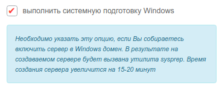

Для начала в панели управления необходимо создать необходимые для сети серверы и один из них будет контроллером домена.
Важно: для работы с Active Directory необходимо при заказе сервера в панели управления отметить галочкой поле “выполнить системную подготовку Windows”.
Галочка при заказе сервера
После создания необходимо объединить все машины в единую частную сеть через панель управления в разделе “Частные сети”, в результате чего они получат локальные IP-адреса.

Настройка сетевого адаптера контроллера домена
Для начала подключитесь к виртуальному серверу по протоколу RDP.
О том как настроить сетевой адаптер написано в нашей инструкции.
Укажите локальный IP-адрес, маску подсети и шлюз по умолчанию из раздела Сети панели управления. В качестве предпочитаемого DNS-сервера укажите IP-адрес шлюза по умолчанию. Сохраните настройки.